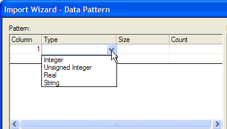
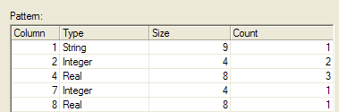
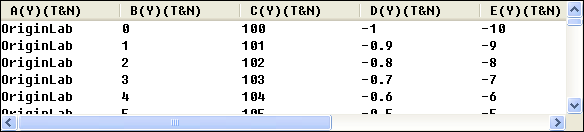
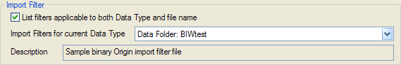

Einfache Binärdateien mit dem Importassistenten importieren
ImpWiz-Simple-Binary-Files
In diesem Thema werden wir eine Beispieldatei importieren, die mit 280 Bytes Headerinformationen beginnt. Dieser Header besteht aus Textinformationen und kann im Vorschaufenster auf der Seite Header-Bytes des Importassistenten angesehen werden.
 |
Für Origin 2019b wurde ein Bitwert zur Systemvariable @DENG hinzugefügt, um zu steuern, wie der Importassistent die Dateivorschau erstellt. Standard ist jetzt, dass Origin zuerst versucht, die Datei als binär zu behandeln, um auf Byte Order Marks zu prüfen, oder versucht, die Dateikodierung zu "erraten". Sollte dies fehlschlagen, wird die Datei als eine Textdatei behandelt.
|
Die Daten, die dem Header folgen, bestehen aus 100 Einträgen dieser Struktur:
- 1 Zeichenkette der Länge 9 Zeichen
- 2 ganze Zahlen (jede 4 Bytes)
- 3 reelle Zahlen (jede 8 Bytes)
Um dieses Tutorial zu beginnen:
- 1. Wählen Sie bei aktivem Arbeitsblatt Datei: Import: Importassistent oder klicken Sie auf die Schaltfläche Importassistent auf der Symbolleiste Standard. Die Seite Quelle des Importassistenten wird geöffnet.
- 2. Setzen Sie den Datentyp auf Binär.
- 3. Klicken Sie auf die Schaltfläche Durchsuchen auf der rechten Seite des Textfelds Datei, gehen Sie zu dem Ordner \Samples\Import and Export (in Ihrem Origin-Programmordner) und wählen Sie die Datei Binary Simple.dat.
- 4. Klicken Sie auf die Schaltfläche Weiter.
Hierdurch wird die Seite Headerbytes geöffnet. Nun muss der Headeranteil der Beispieldatei ermittelt werden. Es ist angegeben, dass die Datei mit 280 Bytes Headerinformationen beginnt.
- 5. Geben Sie 280 in das Textfeld Anzahl der Headerbytes ein und klicken Sie auf die Schaltfläche Weiter unten auf der Seite.
Hierdurch wird die Seite Datenmuster geöffnet. Nun müssen wir die Datenstrukturinformationen eingeben, die dem Importassistenten angibt, wie die Beispielbinärdatei analysiert werden soll.
- 6. Klicken Sie auf eine beliebige Stelle in Spalte Typ. Eine Auswahlschaltfläche wird angezeigt. Klicken Sie auf die Auswahlschaltfläche und wählen Sie aus der Liste Zeichenkette aus.
- 
- 7. Klicken Sie in die Spalte Größe und geben Sie 9 ein (die Zeichenkette ist 9 Zeichen lang).
- 8. Klicken Sie in die Spalte Anzahl und geben Sie 1 ein (es gibt eine Zeichenkette).
- 9. Kehren Sie zu der Spalte Typ zurück und wählen Sie in der Auswahlliste Ganze Zahl aus. Die Größe wird automatisch auf 4 gesetzt (was richtig ist).
- 10. Geben Sie in der Spalte Anzahl 2 ein.
Wiederholen Sie den Vorgang, wobei Sie die restlichen Informationen, die gegeben sind, verwenden. Wenn Sie fertig sind, sollte ihr Muster folgendermaßen aussehen:
- 
Sie sollten nun auch eine geordnete Darstellung Ihrer Daten im Vorschaufenster unten auf der Seite Datenmuster sehen.
- 
- 12. Klicken Sie dreimal auf die Schaltfläche Weiter. Hierdurch wird die Seite Filter speichern geöffnet.
- 13. Aktivieren Sie das Kontrollkästchen Filter speichern.
- 14. Wählen Sie die Option In den Datendateiordner aus.
- 15. Geben Sie eine Filterbeschreibung ein (z.B. "Origin-Beispiel für binäre Importfilterdatei").
- 16. Geben Sie in das Textfeld Filterdateiname den Text BIWtest ein.
- 17. Geben Sie in das Textfeld Filterdateinamen angeben... B*.dat ein (die Erweiterung .dat ist allgemein, so stellt das Festlegen eines Dateinamens und eines Dateityps sicher, dass diese Filterdatei nur bei diesen oder ähnlich benannten .dat-Dateien angewendet wird).
- 18. Klicken Sie auf die Schaltfläche Fertigstellen.
Die binären Daten werden in das Origin-Worksheet importiert. Gleichzeitig wird eine Origin-Importfilterdatei mit der Erweiterung .OIF erstellt und im Ordner \Samples\Import and Export Ihres Origin-Programmordners gespeichert. Dieser Filter kann nun dazu verwendet werden, um diese oder ähnlich strukturierte Binärdateien mit der Erweiterung .DAT erneut zu importieren .
- 19. Um dies nachzuprüfen, öffnen Sie ein leeres Arbeitsblatt und wiederholen Sie die obenstehenden Schritte 1 - 3. Beachten Sie, dass der Filter automatisch vom Importassistenten (1. Seite oder Seite Datenquelle) erkannt wird, weil wir die Filterdatei im Datendateiverzeichnis gespeichert haben.
- 
- 20. Diesmal klicken Sie anstatt auf die Schaltfläche Weiter (Schritt 4) auf Fertigstellen. Die Datei ist nun ohne weiteres Eingreifen Ihrerseits korrekt in das Arbeitsblatt importiert worden.
Weitere Informationen zum Erstellen von Origin-Importfilterdateien finden Sie unter "Seite Filter speichern des Importassistenten" in der Origin-Hilfedatei.